Název hry bude doplněn
TODO: Doplňte krátký popis připravovaného překladu.
NioCZ komunitní překlady
České komunitní překlady pro PC hry.
Překlady, návody na instalaci a aktualizace na jednom místě.
Prohlédnout překladyCo je nového
Nové češtiny a poslední aktualizace na jednom místě.
Přehled vydání
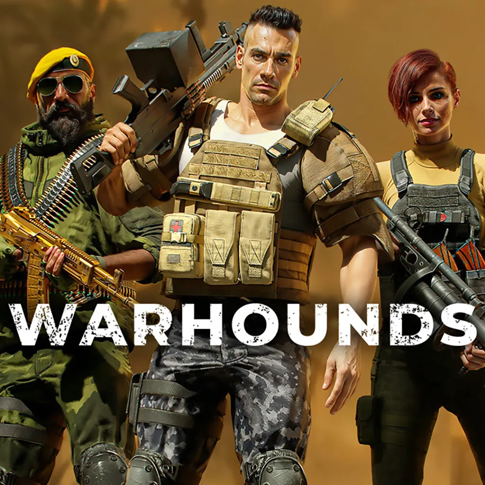
NovéČeština · 100 %
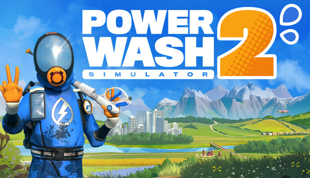
NovéČeština · 100 %
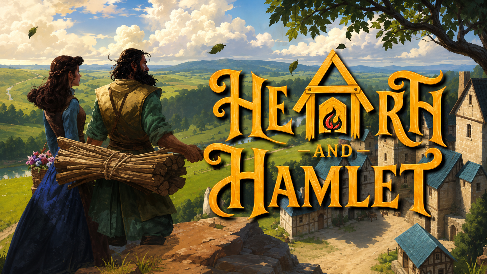
NovéČeština · 100 %
 Nové
NovéČeština · 100 %
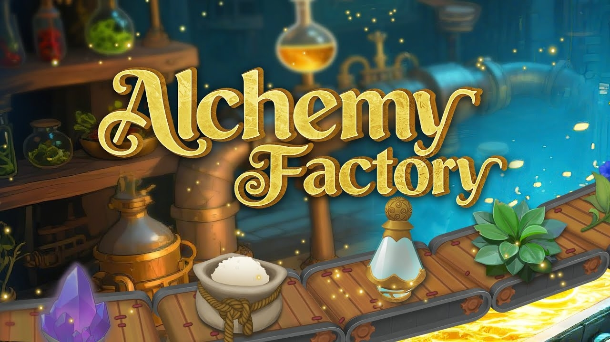
NovéČeština · 100 %
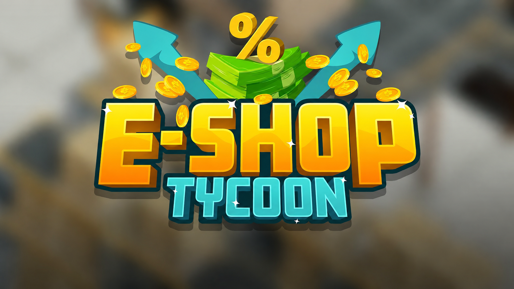
NovéČeština · 100 %
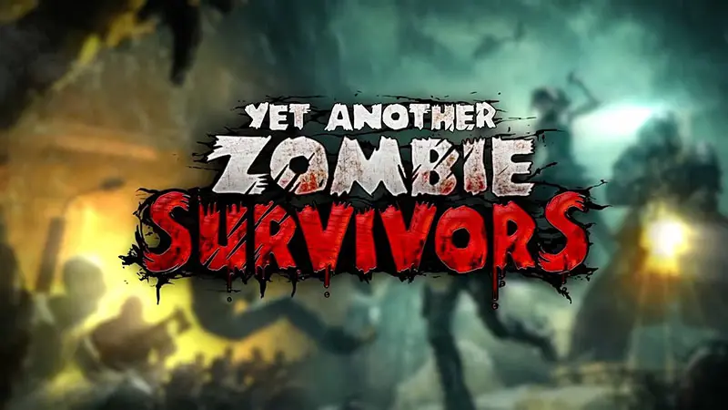
AktualizovánoČeština · 100 %
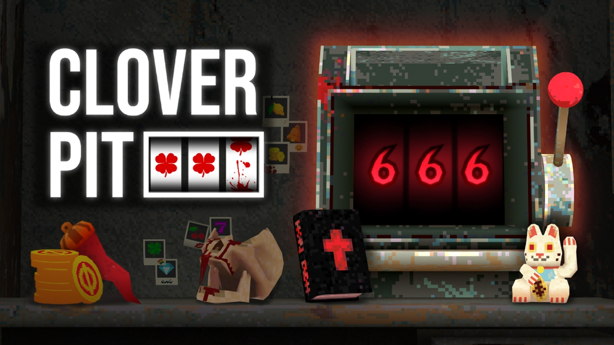
NovéČeština · 100 %
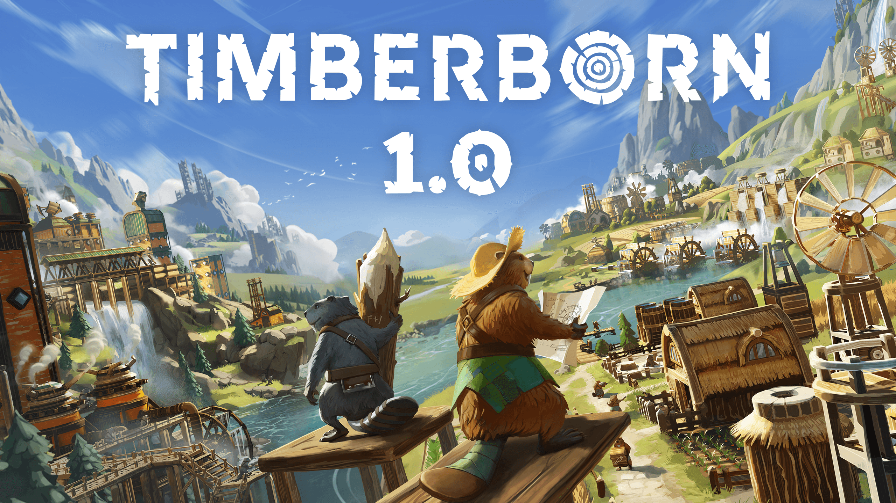
NovéČeština · 100 %
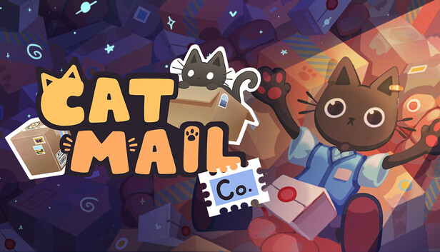
NovéČeština · 100 %
 Nové
NovéČeština · 100 %
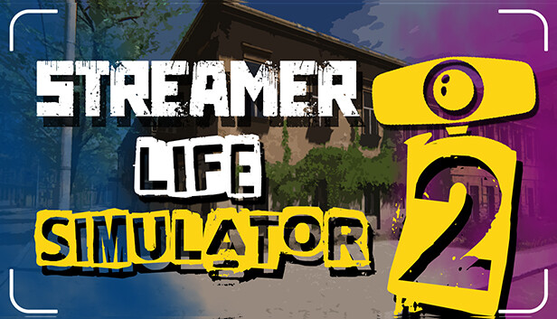
NovéČeština · 100 %
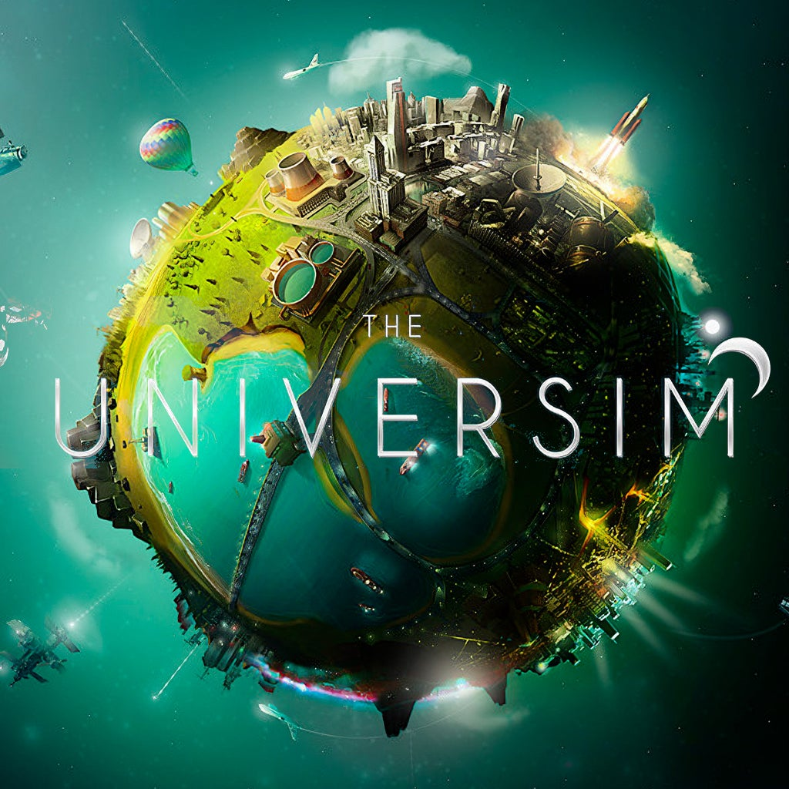
NovéČeština · 100 %
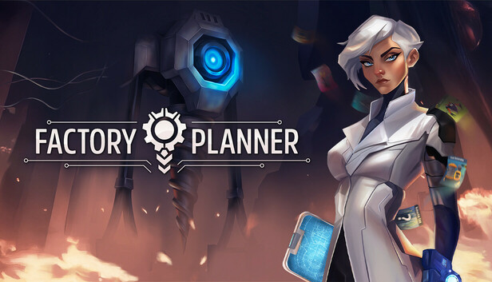
NovéČeština · 100 %
 Aktualizováno
AktualizovánoČeština · 100 %
 Aktualizováno
AktualizovánoČeština · 97 %
 Aktualizováno
AktualizovánoČeština · 95 %
Výhled překladů
TODO: Doplňte krátký popis připravovaného překladu.
Rozhoduje komunita
Dejte hlas hře, kterou byste si nejraději zahráli v češtině.
Načítám nejžádanější překlady…
O projektu
NioCZ je komunitní projekt zaměřený na české překlady PC her. Cílem je zpřístupnit zajímavé hry hráčům, kterým v nich čeština chybí.
Každý překlad průběžně kontrolujeme a aktualizujeme podle možností projektu.
Kontakt
Dejte nám vědět. Zpětná vazba pomáhá překlady postupně zlepšovat.
Komunitní účet